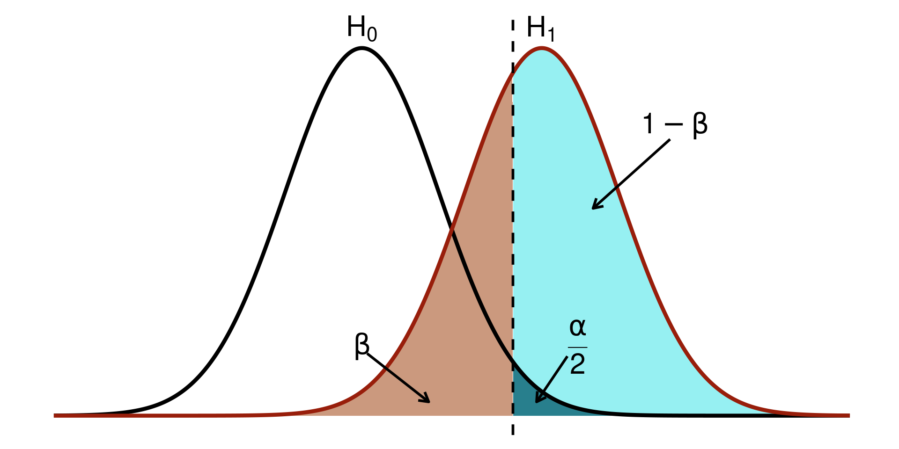
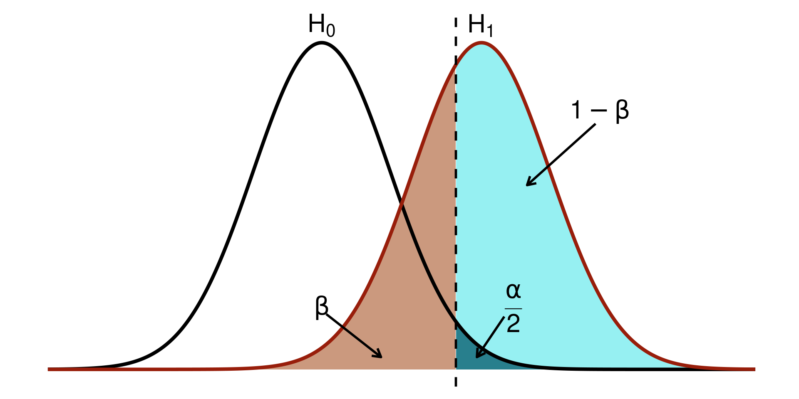
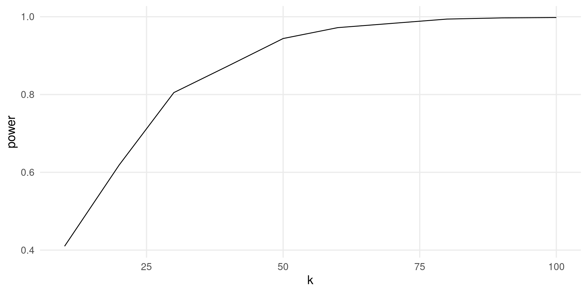
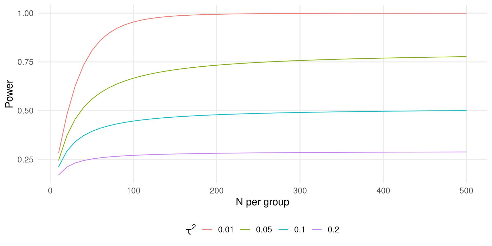

Psicometria per le Neuroscienze Cognitive
Filippo Gambarota, PhD
The stastistical power is defined as the probability of correctly rejecting the null hypothesis \(H_0\).

For simple designs such as t-test, ANOVA, etc. the power can be computed analytically. For example, let’s find the power of detecting an effect size of \(d = 0.5\) with \(n1 = n2 = 30\).
d <- 0.5
alpha <- 0.05
n1 <- n2 <- 30
sp <- 1
# Calculate non-centrality parameter (delta)
delta <- d * sqrt(n1 * n2 / (n1 + n2))
# Calculate degrees of freedom
df <- n1 + n2 - 2
# Calculate critical t-value
critical_t <- qt(1 - alpha / 2, df)
# Calculate non-central t-distribution value
non_central_t <- delta / sp
# Calculate power
1 - pt(critical_t - non_central_t, df)
#> [1] 0.4741093The same can be done using the pwr package:
Sometimes the analytical solution is not available or we can estimate the power for complex scenarios (missing data, unequal variances, etc.). The general workflow is:
For example, the power is the number of p-values lower than \(\alpha\) over the total number of simulations.
Let’s see the previous example using simulations:
The estimated value is pretty close to the analytical value.
Also for meta-analysis we have the two approaches analytical and simulation-based.
For the analytical approach we need to make some assumptions:
Under these assumptions the power is:
\[ (1 - \Phi(c_{\alpha} - \lambda)) + \Phi(-c_{\alpha} - \lambda) \]
Where \(c_{\alpha}\) is the critical \(z\) value and \(\lambda\) is the observed statistics.
For an EE model the only source of variability is the sampling variability, thus \(\lambda\):
\[ \lambda_{EE} = \frac{\theta}{\sqrt{\sigma^2_{\theta}}} \]
And recalling previous assuptions where \(\sigma^2_1 = \dots = \sigma^2_k\):
\[ \sigma^2_{\theta} = \frac{\sigma^2}{k} \]
For example, a meta-analysis of \(k = 15\) studies where each study have a sample size of \(n1 = n2 = 20\) (assuming again unstandardized mean difference as effect size):
Be careful that the EE model is assuming \(\tau^2 = 0\) thus is like having a huge study with \(k \times n_1\) participants per group.
For the RE model we just need to include \(\tau^2\) in the \(\lambda\) calculation, thus:
\[ \sigma^{2\star}_{\theta} = \frac{\sigma^2 + \tau^2}{k} \]
The other calculations are the same as the EE model.
The power is reduced because we are considering another source of heterogeneity. Clearly the maximal power of \(k\) studies is achieved when \(\tau^2 = 0\). Hypothetically we can increase the power either increasing \(k\) (the number of studies) or reducing \(\sigma^2_k\) (increasing the number of participants in each study).
The most informative approach is plotting the power curves for different values of \(\tau^2\), \(\sigma^2_k\) and \(\theta\) (or \(\mu_{\theta}\)).
You can use the power_meta() function:
k <- c(5, 10, 30, 50, 100)
es <- c(0.1, 0.3)
tau2 <- c(0, 0.05, 0.1, 0.2)
n <- c(10, 30, 50, 100, 1000)
power <- expand_grid(es, k, tau2, n1 = n)
power$power <- power_meta(power$es, power$k, power$tau2, power$n1)
power$es <- factor(power$es, labels = latex2exp::TeX(sprintf("$\\mu_{\\theta} = %s$", es)))
power$tau2 <- factor(power$tau2, labels = latex2exp::TeX(sprintf("$\\tau^2 = %s$", tau2)))
ggplot(power, aes(x = factor(k), y = power, color = factor(n1))) +
geom_point() +
geom_line(aes(group = factor(n1))) +
facet_grid(es~tau2, labeller = label_parsed) +
xlab("Number of Studies (k)") +
ylab("Power") +
labs(
color = latex2exp::TeX("$n_1 = n_2$")
)With the analytical approach we can (quickly) do interesting stuff. For example, we fix the total \(N = n_1 + n_2\) for a series of \(k\) and check the power.
# average meta k = 20, n = 30
kavg <- 20
navg <- 30
N <- kavg * (navg*2)
es <- 0.3
tau2 <- c(0, 0.05, 0.1, 0.2)
k <- seq(10, 100, 10)
n1 <- n2 <- round((N/k)/ 2)
sim <- data.frame(es, k, n1, n2)
sim <- expand_grid(sim, tau2 = tau2)
sim$power <- power_meta(sim$es, sim$k, sim$tau2, sim$n1, sim$n2)
sim$N <- with(sim, k * (n1 + n2))
ggplot(sim, aes(x = k, y = power, color = factor(tau2))) +
geom_line() +
ggtitle(latex2exp::TeX("Total N ($n_1 + n_2$) = 1200")) +
labs(x = "Number of Studies (k)",
y = "Power",
color = latex2exp::TeX("$\\tau^2$"))As long as \(\tau^2 \neq 0\) we need more studies (even if the total sample size is the same).
With simulations we can fix or relax the previous assumptions. For example, let’s compute the power for an EE model:
The value is similar to the analytical simulation. But we can improve it e.g. generating heterogeneous sample sizes.
By repeating the previous approach for a series of parameters we can easily draw a power curve:
k <- c(5, 10, 50, 100)
es <- 0.1
tau2 <- c(0, 0.05, 0.1, 0.2)
nsim <- 1000
grid <- expand_grid(k, es, tau2)
power <- rep(NA, nrow(grid))
for(i in 1:nrow(grid)){
pval <- rep(NA, nsim)
for(j in 1:nsim){
n <- rpois(grid$k[i], 40)
dat <- sim_studies(grid$k[i], grid$es[i], grid$tau2[i], n)
fit <- rma(yi, vi, data = dat)
pval[j] <- fit$pval
}
power[i] <- mean(pval <= 0.05)
}
grid$power <- powerThe power for a meta-regression can be easily computed by simulating the moderator effect. For example, let’s simulate the effect of a binary predictor \(x\).
k <- seq(10, 100, 10)
b0 <- 0.2 # average of group 1
b1 <- 0.1 # difference between group 1 and 2
tau2r <- 0.2 # residual tau2
nsim <- 1000
power <- rep(NA, length(k))
for(i in 1:length(k)){
es <- b0 + b1 * rep(0:1, each = k[i]/2)
pval <- rep(NA, nsim)
for(j in 1:nsim){
n <- round(runif(k[i], 10, 100))
dat <- sim_studies(k[i], es, tau2r, n)
fit <- rma(yi, vi, data = dat)
pval[j] <- fit$pval
}
power[i] <- mean(pval <= 0.05)
}Then we can plot the results:
Multilab studies can be seen as a meta-analysis that is planned (a prospective meta-analysis) compared to standard retrospective meta-analysis.
The statistical approach is (roughly) the same with the difference that we have control both on \(k\) (the number of experimental units) and \(n\) the sample size within each unit.
In multilab studies we have also the raw data (i.e., participant-level data) thus we can do more complex multilevel modeling.
Assuming that we have \(k\) studies with raw data available there is no need to aggregate, calculate the effect size and variances and then use an EE or RE model.
k <- 50
es <- 0.4
tau2 <- 0.1
n <- round(runif(k, 10, 100))
dat <- vector(mode = "list", k)
thetai <- rnorm(k, 0, sqrt(tau2))
for(i in 1:k){
g1 <- rnorm(n[i], 0, 1)
g2 <- rnorm(n[i], es + thetai[i], 1)
d <- data.frame(id = 1:(n[i]*2), unit = i, y = c(g1, g2), group = rep(c(0, 1), each = n[i]))
dat[[i]] <- d
}
dat <- do.call(rbind, dat)
ht(dat)
#> id unit y group
#> 1 1 1 -0.4359058 0
#> 2 2 1 1.5799758 0
#> 3 3 1 0.7015053 0
#> 4 4 1 0.1376932 0
#> 5 5 1 -1.7018263 0
#> 5257 63 50 1.0430772 1
#> 5258 64 50 -0.7878105 1
#> 5259 65 50 -0.4609004 1
#> 5260 66 50 1.5076526 1
#> 5261 67 50 0.9963187 1
#> 5262 68 50 -0.2518844 1This is a simple multilevel model (pupils within classrooms or trials within participants). We can fit the model using lme4::lmer():
library(lme4)
fit_lme <- lmer(y ~ group + (1|unit), data = dat)
summary(fit_lme)
#> Linear mixed model fit by REML ['lmerMod']
#> Formula: y ~ group + (1 | unit)
#> Data: dat
#>
#> REML criterion at convergence: 15282.1
#>
#> Scaled residuals:
#> Min 1Q Median 3Q Max
#> -3.6473 -0.6764 0.0169 0.6663 3.5499
#>
#> Random effects:
#> Groups Name Variance Std.Dev.
#> unit (Intercept) 0.03605 0.1899
#> Residual 1.05226 1.0258
#> Number of obs: 5262, groups: unit, 50
#>
#> Fixed effects:
#> Estimate Std. Error t value
#> (Intercept) 0.0006038 0.0341201 0.018
#> group 0.3992543 0.0282823 14.117
#>
#> Correlation of Fixed Effects:
#> (Intr)
#> group -0.414Let’s do the same as a meta-analysis. Firstly we compute the effect sizes for each unit:
ht(datagg)
#>
#> unit m0 m1 sd0 sd1 n0 n1 yi vi
#> 1 1 -0.067197098 0.40582612 0.9304467 1.0147085 42 42 0.4730 0.0451
#> 2 2 -0.091403369 -0.39447251 1.1524521 1.0145999 22 22 -0.3031 0.1072
#> 3 3 -0.003808028 0.16236294 0.9414775 0.7959424 20 20 0.1662 0.0760
#> 4 4 0.074297764 0.14426023 0.9656452 1.0081848 97 97 0.0700 0.0201
#> 5 5 -0.068813812 0.26518665 0.9798539 1.1045266 26 26 0.3340 0.0838
#> 45 45 -0.030328846 0.18885527 0.9490194 1.0119891 96 96 0.2192 0.0200
#> 46 46 0.076619304 0.24552547 1.0223705 0.8317036 37 37 0.1689 0.0469
#> 47 47 -0.123421255 0.80612492 0.8958121 1.2418829 41 41 0.9295 0.0572
#> 48 48 -0.012340409 -0.27712644 1.0127637 0.9681938 85 85 -0.2648 0.0231
#> 49 49 0.351899444 -0.08890696 0.9262625 1.0037785 46 46 -0.4408 0.0406
#> 50 50 -0.231551420 0.21903620 1.1221262 0.9182845 34 34 0.4506 0.0618Then we can fit the model:
fit_rma <- rma(yi, vi, data = datagg)
fit_rma
#>
#> Random-Effects Model (k = 50; tau^2 estimator: REML)
#>
#> tau^2 (estimated amount of total heterogeneity): 0.1623 (SE = 0.0419)
#> tau (square root of estimated tau^2 value): 0.4028
#> I^2 (total heterogeneity / total variability): 81.04%
#> H^2 (total variability / sampling variability): 5.28
#>
#> Test for Heterogeneity:
#> Q(df = 49) = 260.7313, p-val < .0001
#>
#> Model Results:
#>
#> estimate se zval pval ci.lb ci.ub
#> 0.3711 0.0647 5.7356 <.0001 0.2443 0.4979 ***
#>
#> ---
#> Signif. codes: 0 '***' 0.001 '**' 0.01 '*' 0.05 '.' 0.1 ' ' 1Actually the results are very similar where the standard deviation of the intercepts of the lme4 model is \(\approx \tau\) and the group effect is the intercept of the rma model.
data.frame(
b = c(fixef(fit_lme)[2], fit_rma$b),
se = c(summary(fit_lme)$coefficients[2, 2], fit_rma$se),
tau2 = c(as.numeric(VarCorr(fit_lme)[[1]]), fit_rma$tau2),
model = c("lme4", "metafor")
)
#> b se tau2 model
#> group 0.3992543 0.02828232 0.03604771 lme4
#> 0.3710964 0.06470033 0.16226242 metaforActually the two model are not exactly the same, especially when using only the aggregated data. See https://www.metafor-project.org/doku.php/tips:rma_vs_lm_lme_lmer.
To note, aggregating data and then computing a standard (non-weighted) model (sometimes this is done with trial-level data) is wrong and should be avoided. Using meta-analysis is clear that aggregating without taking into account the cluster (e.g., study or subject) precision is misleading.
dataggl <- datagg |>
select(unit, m0, m1) |>
pivot_longer(c(m0, m1), values_to = "y", names_to = "group")
summary(lmer(y ~ group + (1|unit), data = dataggl))
#> Linear mixed model fit by REML ['lmerMod']
#> Formula: y ~ group + (1 | unit)
#> Data: dataggl
#>
#> REML criterion at convergence: 63.5
#>
#> Scaled residuals:
#> Min 1Q Median 3Q Max
#> -2.5460 -0.5662 -0.1141 0.4252 4.0163
#>
#> Random effects:
#> Groups Name Variance Std.Dev.
#> unit (Intercept) 0.0000 0.0000
#> Residual 0.1034 0.3215
#> Number of obs: 100, groups: unit, 50
#>
#> Fixed effects:
#> Estimate Std. Error t value
#> (Intercept) 0.009959 0.045473 0.219
#> groupm1 0.365573 0.064309 5.685
#>
#> Correlation of Fixed Effects:
#> (Intr)
#> groupm1 -0.707
#> optimizer (nloptwrap) convergence code: 0 (OK)
#> boundary (singular) fit: see help('isSingular')When planning a multilab study there is an important decision between increasing the sample size within each unit (more effort for each lab) or recruiting more units with less participants per unit (more effort for the organization).
We could have the situation where the number of units \(k\) is fixed and we can only increase the sample size.
We can also simulate scenarios where some units collect all data while others did not complete the data collection.
Let’s assume that the maximum number of labs is \(10\). How many participants are required assuming a certain amount of heterogeneity?
es <- 0.2
k <- 10
n1 <- n2 <- seq(10, 500, 10)
tau2 <- c(0.01, 0.05, 0.1, 0.2)
sim <- expand_grid(k, es, tau2, n1)
sim$n2 <- sim$n1
sim$vt <- with(sim, 1/n1 + 1/n2)
sim$I2 <- round(with(sim, tau2 / (tau2 + vt)) * 100, 3)
sim$power <- power_meta(sim$es, sim$k, sim$tau2, sim$n1, sim$n2)
ht(sim)
#> # A tibble: 11 × 8
#> k es tau2 n1 n2 vt I2 power
#> <dbl> <dbl> <dbl> <dbl> <dbl> <dbl> <dbl> <dbl>
#> 1 10 0.2 0.01 10 10 0.2 4.76 0.281
#> 2 10 0.2 0.01 20 20 0.1 9.09 0.479
#> 3 10 0.2 0.01 30 30 0.0667 13.0 0.627
#> 4 10 0.2 0.01 40 40 0.05 16.7 0.733
#> 5 10 0.2 0.01 50 50 0.04 20 0.807
#> 6 10 0.2 0.2 450 450 0.00444 97.8 0.288
#> 7 10 0.2 0.2 460 460 0.00435 97.9 0.288
#> 8 10 0.2 0.2 470 470 0.00426 97.9 0.288
#> 9 10 0.2 0.2 480 480 0.00417 98.0 0.288
#> 10 10 0.2 0.2 490 490 0.00408 98 0.288
#> 11 10 0.2 0.2 500 500 0.004 98.0 0.288With a fixed \(k\), we could reach a plateau even increasing \(n\). This depends also on \(\mu_{\theta}\) and \(\tau^2\).
A special type of multilab studies are the replication projects. There are some paper discussing how to view replication studies as meta-analyses and how to plan them.